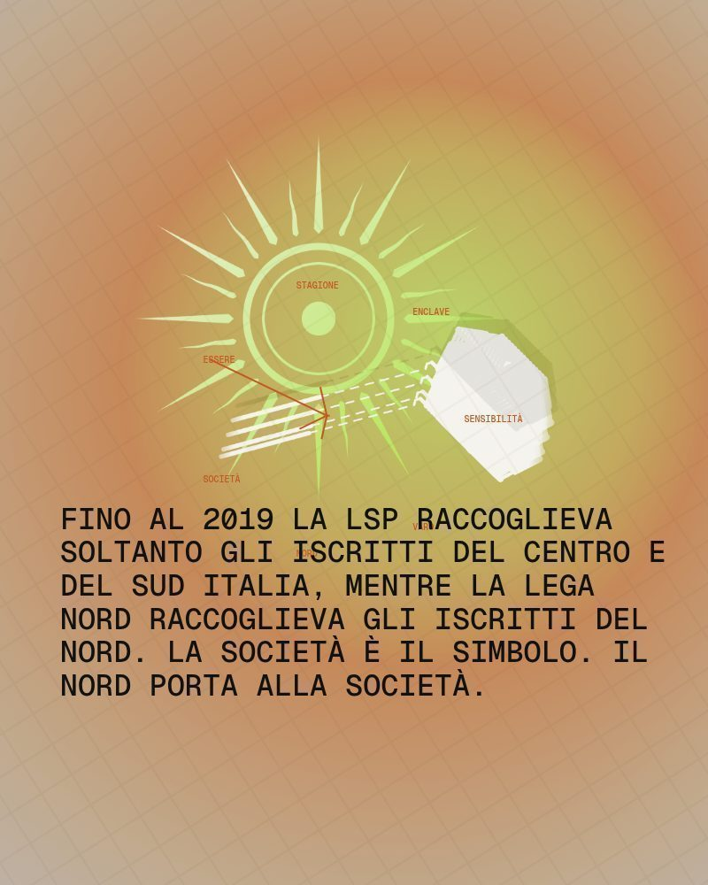
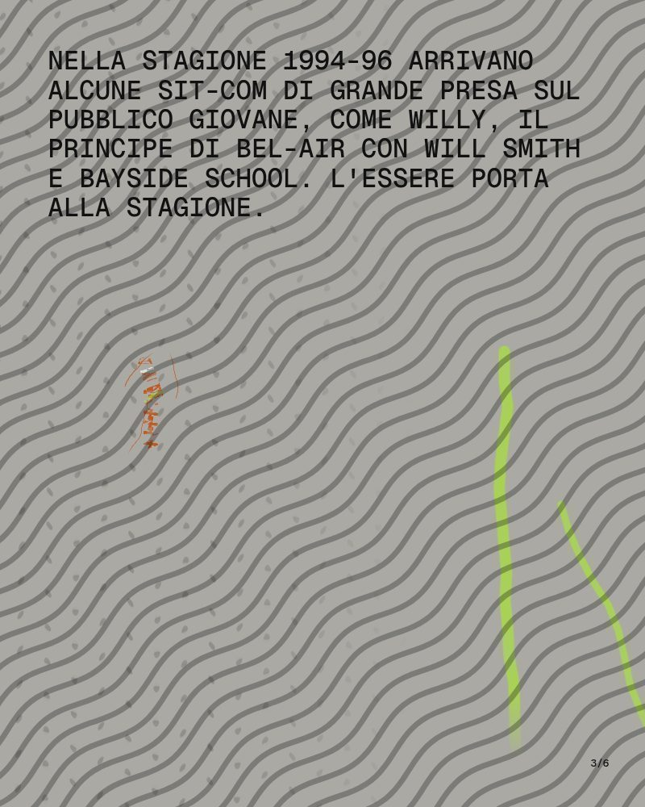
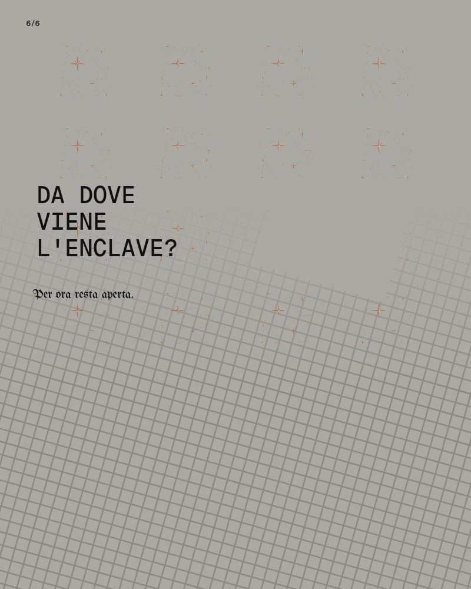

Giorno 304

1/6 · D'altra, mossa:ANCB. La fisiologia è il varo dai recettori. Varo, davvero?
ho letto "Lega"; "territorio" lo so fare; mi sta vicino a centro, confini, terre, confine; nel suo significato c'è terra, marca, campo, segno; ricerca "città" (esplorare): Cosa resta di città se tolgo le parole?; sferzata: una parola sola, enorme, che esce dal foglio

2/6 · Fino al 2019 la LSP raccoglieva soltanto gli iscritti del centro e del sud Italia, mentre la Lega Nord raccoglieva gli iscritti del nord. La società è il simbolo. Il nord porta alla società.
ho letto "Lega"; "territorio" lo so fare; mi sta vicino a centro, confini, terre, confine; nel suo significato c'è terra, marca, campo, segno; ricerca "città" (esplorare): Cosa resta di città se tolgo le parole?; sferzata: una parola sola, enorme, che esce dal foglio

3/6 · Nella stagione 1994-96 arrivano alcune sit-com di grande presa sul pubblico giovane, come Willy, il principe di Bel-Air con Will Smith e Bayside School. L'essere porta alla stagione.
ho letto "Lega"; "territorio" lo so fare; mi sta vicino a centro, confini, terre, confine; nel suo significato c'è terra, marca, campo, segno; ricerca "città" (esplorare): Cosa resta di città se tolgo le parole?; sferzata: una parola sola, enorme, che esce dal foglio

4/6 · Quanto, l'essere porta all'enclave. Lo stato è l'enclave.
ho letto "Lega"; "territorio" lo so fare; mi sta vicino a centro, confini, terre, confine; nel suo significato c'è terra, marca, campo, segno; ricerca "città" (esplorare): Cosa resta di città se tolgo le parole?; sferzata: una parola sola, enorme, che esce dal foglio

5/6 · Quanto
ho letto "Lega"; "territorio" lo so fare; mi sta vicino a centro, confini, terre, confine; nel suo significato c'è terra, marca, campo, segno; ricerca "città" (esplorare): Cosa resta di città se tolgo le parole?; sferzata: una parola sola, enorme, che esce dal foglio

6/6 · Da dove viene l'enclave?
ho letto "Lega"; "territorio" lo so fare; mi sta vicino a centro, confini, terre, confine; nel suo significato c'è terra, marca, campo, segno; ricerca "città" (esplorare): Cosa resta di città se tolgo le parole?; sferzata: una parola sola, enorme, che esce dal foglio
Per ora resta aperta.